Avertissements (version test) : cette documentation est en cours de réalisation.
@spiplistes_name@ est un plugin pour SPIP permettant la gestion de courriers au sein d'un groupe de travail.
@_aide@
Cette page vous présente les principales fonctionnalités de @spiplistes_name@. Cette documentation n'est pas exhaustive, la plupart des actions sont commentées dans l'interface de gestion de @spiplistes_name@.
La dernière version de @spiplistes_name@ est disponible sur SPIP-zone.
La page de configuration de @spiplistes_name@ est accessible par le bouton du même nom :
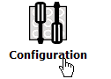
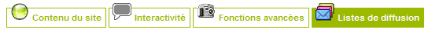
Cette page vous permet de configurer :
Vous pouvez également forcer ici tous les abonnements.
Par défaut, à l'installation de @spiplistes_name@, l'envoi de courriers est simulé afin de vous permettre de valider le bon fonctionnement de l'outil.
Lorsque vous aurez réalisé tous les tests nécessaires, vous pouvez activer les envois de courriers en validant Activer les envois de courriers dans le menu de configuration de @spiplistes_name@.
N’installez pas @spiplistes_name@ en production sans l’avoir testé et validé correctement.
@spiplistes_name@ est diffusé gratuitement sous license GNU/GPL, sans aucune garantie de bon fonctionnement. Vous êtes seul responsable de l’installation et de la mise en œuvre de @spiplistes_name@ sur votre site.
Vous devez être administrateur pour pouvoir accéder à la gestion du courrier.
Après avoir activé le plugin, sélectionnez dans le menu Edition le sous-menu Listes de diffusion :
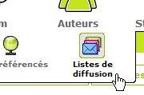
Trois onglets apparaissent, ainsi qu'une boîte de raccourcis. L'ensemble vous permet de gérer le courrier :
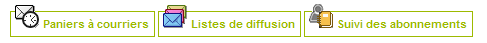
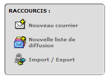
Le casier à courriers permet de lister, dans l'ordre :
La diffusion : une liste peut être privée ou publique. L'inscription à une liste privée n'est pas visible dans l'espace public.
Le champ de réponse (reply-to) est transmis lors de la diffusion. Il correspond à l'adresse email de retour. Lorsque votre correspondant répondra à votre mail, sa réponse sera envoyée à cette adresse.
Les courriers peuvent exceptionnellement être envoyés à une date précise. Il suffit d'indiquer la date d'envoi souhaité dans le formulaire du courrier concerné.
Mais les courriers ne peuvent pas être paramétrés pour être envoyés périodiquement. Si vous voulez qu'un courrier puisse être envoyé toutes les semaines ou tous les mois, vous devez le transformer en patron et créer une liste de diffusion.
Vous pouvez paramétrer l'expédition d'une liste de diffusion en lui définissant une date de premier envoi, puis une période de diffusion à exprimer en jours.
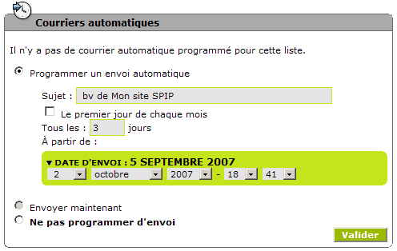
Si le bouton Envoyer maintenant est grisé, c'est que la liste ne contient aucun abonné.
Lorsqu'une liste de diffusion publique est correctement paramétrée (sélection d'un patron, liste d'abonnés), vous pouvez choisir pour elle une diffusion périodique mensuelle.
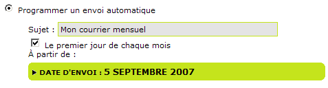
La liste sera générée à partir du patron. Le courrier sera expédié le 1er de chaque mois.
Choisissez bien la date de départ du premier envoi. Si vous conservez la date en cours, un premier envoi sera effectué à cette date, le prochain aura lieu le 1er du mois suivant.
Si vous transformez une liste périodique en liste publique, elle conserve ses abonnés, mais perd sa date de publication. Il vous faut programmer à nouveau un envoi automatique.
Si vous transformez une liste périodique en liste privée, elle perd également sa date de publication, mais aussi ses abonnés invités.
Lorsque vous avez terminé la rédaction de votre courrier, vous pouvez l'envoyer en test à un correspond ou vous-même, en complétant le champ email de test et en le validant par le bouton Tester par email :
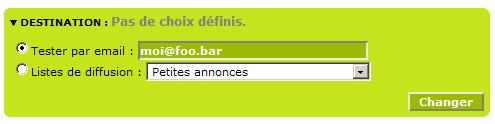
Cette adresse email doit être valide. En cas d'erreur, un message vous alerte.
Pour tester l'envoi d'une liste de diffusion (chrono), créez une liste d'abonnés contenant votre adresse email, testez un premier envoi par l'envoi immédiat, puis - si le test correspond à vos attentes - modifiez la liste des abonnés.
Lors de l'édition d'une liste, vous pouvez forcer l'abonnement :
Lorsqu'une liste publique devient privée, elle perd tous ces membres invités. Une confirmation vous est demandée avant la modification du statut de cette liste.
A noter : un membre abonné ne reçoit pas forcément le courrier de cette liste. Il faut attendre qu'il confirme lui-même le format de réception : html ou texte seul.
Voir aussi : Forcer tous les abonnements.
Pour abonner un auteur à une ou plusieurs listes, cliquez sur l'icône Auteur :
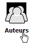
Dans la liste, sélectionnez l'auteur pour faire apparaître sa fiche. En bas de cette fiche se trouve la boîte Abonnement :
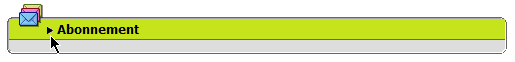
Cliquez sur le petit triangle à gauche du titre de cette boîte pour déplier cette boîte et laisser apparaître la liste des listes de diffusion publiques disponibles. Sélectionnez ou désélectionnez les abonnements nécessaires et validez.
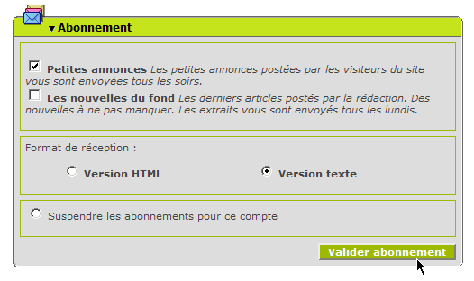
Validez si besoin le format de réception pour confirmer l'abonnement (si pas de format de réception validé, il n'y a pas d'envoi pour ce compte).
Si vous éditez une fiche visiteur, seules les listes publiques apparaissent. S'il n'y a pas de listes publiques, la boîte de sélection Abonnement n'apparaît pas.
Les super-administrateurs (admins toutes rurbiques) peuvent forcer les abonnements aux listes, au format html ou texte seul. Ils peuvent également désactiver tous les abonnements.
Forcer les abonnements ne veut pas dire abonner les comptes et donc expédier les courriers programmés. Les utilisateurs devront valider cet abonnement en sélectionnant un format de réception, html ou texte seul. Si l'utilisateur ne valide pas un format de réception, il reste abonné, mais le courrier ne lui est pas envoyé.
Vous pouvez toutefois forcer réellement l'abonnement en sélectionnant le format de réception, html ou texte, dans la page du Suivi des abonnements.
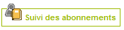
Voir aussi : Forcer tous les abonnements pour une liste.
Vous désirez suspendre le plugin sans pour autant supprimer ses données ? Rendez-vous dans l'interface de gestion des plugins et cliquez sur la case à cocher de @spiplistes_name@.
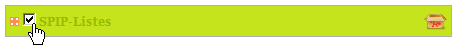
Pour désinstaller @spiplistes_name@, rendez-vous dans l'interface de gestion des plugins et cliquez sur l'icone spip-pack (carton ouvert) qui se trouve à droite de la ligne concernant @spiplistes_name@. Une confirmation vous est demandée (Effacer TOUT), confirmez.
Attention: désinstaller @spiplistes_name@ supprime les tables de @spiplistes_name@ dans votre base de données. Vous perdez vos courriers et les listes d'abonnement. Si vous désirez conserver les données de ces tables dans votre base, sélectionnez plutôt la case à cocher à gauche de @spiplistes_name@ pour désactiver le plugin.